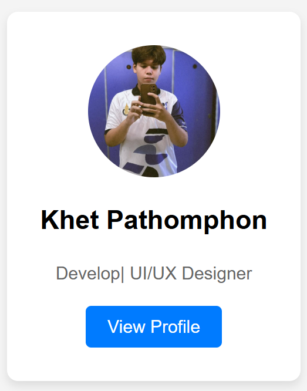

โจทย์นี้จะให้คุณฝึกฝนการใช้งาน CSS พื้นฐานเพื่อสร้างการ์ดโปรไฟล์ที่สวยงามและจัดองค์ประกอบได้อย่างเหมาะสม
คุณจะต้องใช้คุณสมบัติ CSS ต่างๆ
เช่น การปรับขนาด สี ฟอนต์ การจัดวาง และเงา เพื่อให้การ์ดดูน่าสนใจ
สิ่งที่โจทย์ต้องการ :
• ปรับแต่งรูปโปรไฟล์ (class `profile-image`) ให้เป็นวงกลม ขนาด 120x120px
• ปรับขนาดตัวอักษรของชื่อผู้ใช้ (class `profile-name`) เป็น 24px และทำให้เป็นตัวหนา
• ปรับสีข้อความของคำอธิบาย (class `profile-bio`) เป็นสีเทาเข้ม (เช่น `#666`)
• ออกแบบปุ่ม (class `profile-button`) ให้มีพื้นหลังสีน้ำเงิน (เช่น `#007bff`) ตัวอักษรสีขาว มี `padding` 10px 20px และมีขอบโค้งมน 5px
